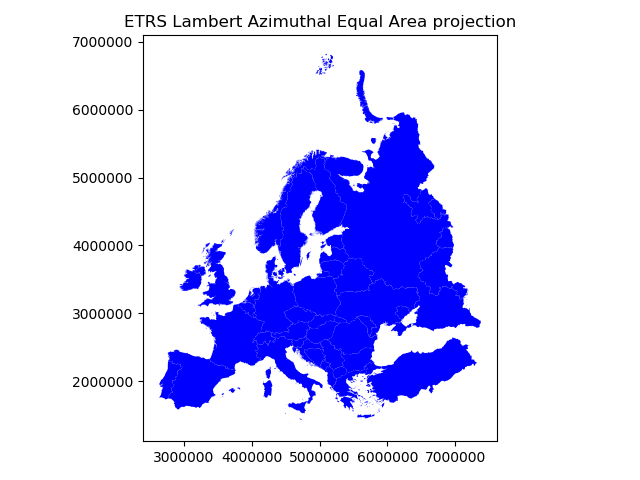
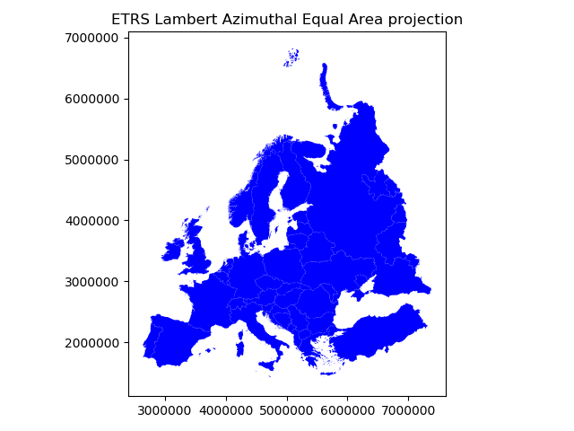

Map projections¶
Coordinate reference systems (CRS) are important because the geometric shapes in a GeoDataFrame are simply a collection of coordinates in an arbitrary space. A CRS tells Python how those coordinates related to places on the Earth. A map projection (or a projected coordinate system) is a systematic transformation of the latitudes and longitudes into a plain surface where units are quite commonly represented as meters (instead of decimal degrees).
As map projections of gis-layers are fairly often defined differently (i.e. they do not match), it is a common procedure to redefine the map projections to be identical in both layers. It is important that the layers have the same projection as it makes it possible to analyze the spatial relationships between layer, such as conduct the Point in Polygon spatial query.
Luckily, defining and changing projections is easy in Geopandas. In this tutorial we will see how to retrieve the coordinate reference system information from the data, and how to change it. We will re-project a data file from WGS84 (lat, lon coordinates) into a Lambert Azimuthal Equal Area projection which is the recommended projection for Europe by European Commission.
Note
Choosing an appropriate projection for your map is not always straightforward because it depends on what you actually want to represent with your map, and what is the spatial scale of your data. In fact, there does not exist a “perfect projection” since each one of them has some strengths and weaknesses, and you should choose such projection that fits best for your needs. You can read more about how to choose a map projection from here, and a nice blog post about the strengths and weaknesses of few commonly used projections.
Download data¶
For this tutorial we will be using a Shapefile representing Europe. Download and extract Europe_borders.zip file that contains a Shapefile with following files:
$ cd $HOME
$ unzip Europe_borders.zip
$ cd Europe_borders
$ ls
Europe_borders.cpg Europe_borders.prj Europe_borders.sbx Europe_borders.shx
Europe_borders.dbf Europe_borders.sbn Europe_borders.shp
Coordinate reference system (CRS)¶
GeoDataFrame that is read from a Shapefile contains always (well not always but should) information about the coordinate system in which the data is projected.
Let’s start by reading the data from the Europe_borders.shp file.
In [1]: import geopandas as gpd
# Filepath to the Europe borders Shapefile
In [2]: fp = "/home/geo/Europe_borders.shp"
# Read data
In [3]: data = gpd.read_file(fp)
We can see the current coordinate reference system from .crs
attribute:
In [4]: data.crs
Out[4]: {'init': 'epsg:4326'}
Okey, so from this disctionary we can see that the data is something called epsg:4326. The EPSG number (“European Petroleum Survey Group”) is a code that tells about the coordinate system of the dataset. “EPSG Geodetic Parameter Dataset is a collection of definitions of coordinate reference systems and coordinate transformations which may be global, regional, national or local in application”. EPSG-number 4326 that we have here belongs to the WGS84 coordinate system (i.e. coordinates are in decimal degrees (lat, lon)).
You can find a lot of information about different available coordinate reference systems from:
Let’s also check the values in our geometry column.
In [5]: data['geometry'].head()
Out[5]:
0 POLYGON ((8.457777976989746 54.56236267089844,...
1 POLYGON ((8.71992015838623 47.69664382934571, ...
2 POLYGON ((6.733166694641113 53.5740852355957, ...
3 POLYGON ((6.858222007751465 53.59411239624024,...
4 POLYGON ((6.89894437789917 53.6256103515625, 6...
Name: geometry, dtype: object
Okey, so the coordinate values of the Polygons indeed look like lat-lon values.
Let’s convert those geometries into Lambert Azimuthal Equal Area projection (EPSG: 3035).
Changing the projection is really easy to do in Geopandas
with .to_crs() -function. As an input for the function, you
should define the column containing the geometries, i.e. geometry
in this case, and a epgs value of the projection that you want to use.
# Let's take a copy of our layer
In [6]: data_proj = data.copy()
# Reproject the geometries by replacing the values with projected ones
In [7]: data_proj = data_proj.to_crs(epsg=3035)
Let’s see how the coordinates look now.
In [8]: data_proj['geometry'].head()
Out[8]:
0 POLYGON ((4221214.558088431 3496203.404338956,...
1 POLYGON ((4224860.478308966 2732279.319617757,...
2 POLYGON ((4104652.175545862 3390034.953002084,...
3 POLYGON ((4113025.664284974 3391895.755505159,...
4 POLYGON ((4115871.227627173 3395282.099288368,...
Name: geometry, dtype: object
And here we go, the numbers have changed! Now we have successfully changed the projection of our layer into a new one, i.e. to ETRS-LAEA projection.
Note
There is also possibility to pass the projection information as proj4 strings or dictionaries, see more here
To really understand what is going on, it is good to explore our data visually. Hence, let’s compare the datasets by making maps out of them.
import matplotlib.pyplot as plt
# Plot the WGS84
data.plot(facecolor='gray');
# Add title
plt.title("WGS84 projection");
# Remove empty white space around the plot
plt.tight_layout()
# Plot the one with ETRS-LAEA projection
data_proj.plot(facecolor='blue');
# Add title
plt.title("ETRS Lambert Azimuthal Equal Area projection");
# Remove empty white space around the plot
plt.tight_layout()
 

{kind=link}
Indeed, they look quite different and our re-projected one looks much better in Europe as the areas especially in the north are more realistic and not so stretched as in WGS84.
Next, we still need to change the crs of our GeoDataFrame into EPSG
3035 as now we only modified the values of the geometry column.
We can take use of fiona’s from_epsg -function.
In [9]: from fiona.crs import from_epsg
# Determine the CRS of the GeoDataFrame
In [10]: data_proj.crs = from_epsg(3035)
# Let's see what we have
In [11]: data_proj.crs
Out[11]: {'init': 'epsg:3035', 'no_defs': True}
Finally, let’s save our projected layer into a Shapefile so that we can use it later.
# Ouput file path
outfp = r"/home/geo/Europe_borders_epsg3035.shp"
# Save to disk
data_proj.to_file(outfp)
Note
On Windows, the prj -file might NOT update with the new CRS value when using the from_epsg() -function. If this happens
it is possible to fix the prj by passing the coordinate reference information as proj4 text, like following.
In [12]: data_proj.crs = '+proj=laea +lat_0=52 +lon_0=10 +x_0=4321000 +y_0=3210000 +ellps=GRS80 +units=m +no_defs'
You can find proj4 text versions for different projection from spatialreference.org.
Each page showing spatial reference information has links for different formats for the CRS. Click a link that says Proj4 and
you will get the correct proj4 text presentation for your projection.
Calculating distances¶
Let’s, continue working with our Europe_borders.shp file and find out the Euclidean distances from
the centroids of the European countries to Helsinki, Finland. We will calculate the distance between Helsinki and
other European countries (centroids) using a metric projection (World Equidistant Cylindrical) that gives us the distance
in meters.
- Let’s first import necessary packages.
In [13]: from shapely.geometry import Point
In [14]: from fiona.crs import from_epsg
Next we need to specify our projection to metric system using World Equidistant Cylindrical -projection where distances are represented correctly from the center longitude and latitude.
- Let’s specify our target location to be the coordinates of Helsinki (lon=24.9417 and lat=60.1666).
In [15]: hki_lon = 24.9417
In [16]: hki_lat = 60.1666
Next we need to specify a Proj4 string to reproject our data into World Equidistant Cylindrical
in which we want to center our projection to Helsinki. We need to specify the +lat_0 and +lon_0 parameters in Proj4 string to do this.
In [17]: proj4_txt = '+proj=eqc +lat_ts=60 +lat_0=60.1666 +lon_0=24.9417 +x_0=0 +y_0=0 +ellps=WGS84 +datum=WGS84 +units=m +no_defs'
Okey, now we are ready to transform our Europe_borders.shp data into the desired projection. Let’s create a new
copy of our GeoDataFrame called data_d (d for ‘distance’).
In [18]: data_d = data.to_crs(proj4_txt)
Let’s take a look of our data and create a map, so we can see what we have now.
In [19]: data_d.plot(facecolor='white');
In [20]: plt.tight_layout();
{kind=link}
Okey, from here we can see that indeed our map is now centered to Helsinki as the 0-position in both x and y is on top of Helsinki.
- Let’s continue our analysis by creating a Point object from Helsinki and insert it into a GeoPandas GeoSeries. We also specify that the CRS of the GeoSeries is WGS84. You can do this by using
crsparameter when creating the GeoSeries.
In [21]: hki = gpd.GeoSeries([Point(hki_lon, hki_lat)], crs=from_epsg(4326))
- Let’s convert this point to the same projection as our Europe data is.
In [22]: hki = hki.to_crs(proj4_txt)
In [23]: print(hki)
0 POINT (0 0)
dtype: object
Aha! So the Point coordinates of Helsinki are 0. This confirms us that the center point of our projection is indeed Helsinki.
Next we need to calculate the centroids for all the Polygons of the European countries. This can be done easily in Geopandas by using the centroid attribute.
In [24]: data_d['country_centroid'] = data_d.centroid
In [25]: data_d.head(2)
Out[25]:
TZID ... country_centroid
0 Europe/Berlin ... POINT (-917903.9422464954 -622642.5405510699)
1 Europe/Berlin ... POINT (-904392.5030473378 -1387445.472292878)
[2 rows x 3 columns]
Okey, so now we have a new column country_centroid that has the Point geometries representing the centroids of each Polygon.
Now we can calculate the distances between the centroids and Helsinki.
At the end of Lesson 6 of Geo-Python course
we saw an example where we used apply() function for doing the loop instead of using the iterrows() function.
In (Geo)Pandas, the apply() function takes advantage of numpy when looping, and is hence much faster
which can give a lot of speed benefit when you have many rows to iterate over. Here, we will see how we can use that
to calculate the distance between the centroids and Helsinki. We will create our own function to do this calculation.
- Let’s first create our function called
calculateDistance().
def calculateDistance(row, dest_geom, src_col='geometry', target_col='distance'):
"""
Calculates the distance between a single Shapely Point geometry and a GeoDataFrame with Point geometries.
Parameters
----------
dest_geom : shapely.Point
A single Shapely Point geometry to which the distances will be calculated to.
src_col : str
A name of the column that has the Shapely Point objects from where the distances will be calculated from.
target_col : str
A name of the target column where the result will be stored.
"""
# Calculate the distances
dist = row[src_col].distance(dest_geom)
# Tranform into kilometers
dist_km = dist/1000
# Assign the distance to the original data
row[target_col] = dist_km
return row
The parameter row is used to pass the data from each row of our GeoDataFrame into our function and then the other paramaters are used for passing other necessary information for using our function.
- Before using our function and calculating the distances between Helsinki and centroids, we need to get the Shapely point geometry from the re-projected Helsinki center point. We can use the
get()function to retrieve a value from specific index (here index 0).
In [26]: hki_geom = hki.get(0)
In [27]: print(hki_geom)
POINT (0 0)
Now we are ready to use our function with apply() function. When using the function, it is important to specify that the axis=1.
This specifies that the calculations should be done row by row (instead of column-wise).
In [28]: data_d = data_d.apply(calculateDistance, dest_geom=hki_geom, src_col='country_centroid', target_col='dist_to_Hki', axis=1)
In [29]: data_d.head(20)
Out[29]:
TZID ... dist_to_Hki
0 Europe/Berlin ... 1109.157960
1 Europe/Berlin ... 1656.179561
2 Europe/Berlin ... 1249.979421
3 Europe/Berlin ... 1243.676322
4 Europe/Berlin ... 1239.567840
5 Europe/Berlin ... 1233.398514
6 Europe/Berlin ... 1219.015820
7 Europe/Berlin ... 1193.458319
8 Europe/Berlin ... 1184.692488
9 Europe/Berlin ... 933.192649
10 Europe/Berlin ... 1177.796732
11 Europe/Berlin ... 1210.850218
12 Europe/Berlin ... 1203.885991
13 Europe/Berlin ... 1111.298075
14 Europe/Berlin ... 909.114086
15 Europe/Berlin ... 1102.821109
16 Europe/Berlin ... 907.927492
17 Europe/Berlin ... 1093.321509
18 Europe/Berlin ... 1104.650594
19 Europe/Berlin ... 1109.059306
[20 rows x 4 columns]
Great! Now we have successfully calculated the distances between the Polygon centroids and Helsinki. :)
Let’s check what is the longest and mean distance to Helsinki from the centroids of other European countries.
In [30]: max_dist = data_d['dist_to_Hki'].max()
In [31]: mean_dist = data_d['dist_to_Hki'].mean()
In [32]: print("Maximum distance to Helsinki is %.0f km, and the mean distance is %.0f km." % (max_dist, mean_dist))
Maximum distance to Helsinki is 3199 km, and the mean distance is 1185 km.
Okey, it seems that we finns in the North are fairly far away from all other European countries as the mean distance to other countries is 1185 kilometers.
Note
If you would like to calculate distances between multiple locations across the globe, it is recommended to use Haversine formula to do the calculations. Haversine package in Python provides an easy-to-use function for calculating these based on latitude and longitude values.